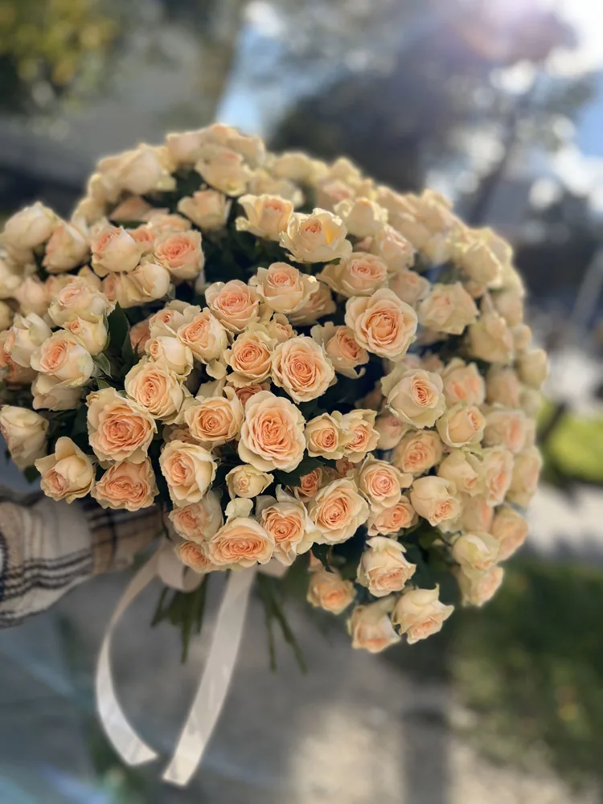

Dla par
Śluby i eventy
Bukiet ślubny, butonierki, dekoracja stołów, ścianka i łuk – przygotujemy całość w jednym stylu. Spotkajmy się w kwiaciarni albo wyślij inspiracje na Instagramie; wrócimy z propozycją i wyceną.
- Bukiety ślubne i wiązanki
- Dekoracje sal, kościołów i plenerów
- Kwiaty na komunie, chrzciny, jubileusze
Wycena indywidualna